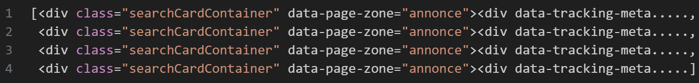

üöô CarScraping üöô
Aybuké BICAT & Hassan TILKI
Introduction
CarScraping qu’est-ce que c’est ?
- Comment se calcule la Côte ARGUS ?
Elle est basée sur le cours-moyen d’argus qui est constitué à l’aide de professionnels du secteur, d’un concessionnaire allant jusqu’au constructeur, mais aussi à l’aide de simples particuliers et des annonces de ventes de véhicule.
Inconvénients : Payant, manque de transparence.
Objectif : créer notre propre côte ARGUS gratuite et sans filtre !
Web Scraping üï∏Ô∏è
C’est une technique d’extraction de données présentes sur des sites web par l’utilisation d’un script ou programme informatique.
Données récupérées depuis La Centrale :
- + de 300 000 annonces
- + de 150 marques
- + de 900 modèles
Extraction en 3 parties :
- Récupération des noms des marques
- Récupération des annonces
- Récupération des caractéristiques
Processus du Scraping : 1/3
Utilisation des 2 packages python :
requestetbs4.Récupération de la liste des marques et des modèles associés.
- Transformer en format JSON.
Processus du Scraping : (2/3)
- Extraction de toutes les annonces disponibles sur le site à l’aide de la fonction
extract_toutes_annonces(), elle permet :- d’iterer sur chaque marques et modèles de véhicule
- d’extraire les pages correspondantes
def recup_page(numero_page: int, marque: str, modele: str) -> BeautifulSoup:
adresse = f"https://www.lacentrale.fr/listing?makesModelsCommercialNames={marque.upper()}%3A{modele.upper()}&options=&page={numero_page}"
...
requete = rq.get(url=adresse)
page = BeautifulSoup(requete.content, "html.parser")- d’avoir une sortie sous forme de liste d’annonces
Processus du Scraping : (3/3)
- Extraction des caractéristiques des véhicules.
def recup_informations_voiture(annonce: str) -> voiture:
marque = recup_nom_vehicule(annonce)
cylindre = recup_cylindre(annonce)
annee, kilometrage, boite, energie = recup_caracteristiques(annonce)
prix = recup_prix(annonce)
position_marché = recup_position_marché(annonce)
garantie = recup_garantie(annonce)
lien = recup_href(annonce)
return voiture(marque=marque, cylindre=cylindre, annee=annee, kilometrage=kilometrage, boite=boite, energie=energie, prix=prix, position_marché=position_marché, garantie=garantie, lien=lien)
def recup_nom_vehicule(annonce: str) -> str:
nom_vehicule = annonce.find_all('h2', class_='Text_Text_text Vehiculecard_Vehiculecard_title Text_Text_subtitle2')
return nom_vehicule[0].text✅ Résultats 4 fichiers JSON obtenu :
json/
{} data_a_d.json
{} data_e_l.json
{} data_m_p.json
{} data_r_z.jsonUn extrait du fichier JSON obtenu :
[
{
"marque": "CITROEN C3 III",
"cylindre": "1.2 PURETECH 110 FEEL",
"annee": "2019",
"kilometrage": "10 698 km",
"boite": "Automatique",
"energie": "Essence",
"prix": "15 990 €",
"position_marché": "Bonne affaire",
"garantie": "Garantie 12 mois",
"lien": "https://www.lacentrale.fr/auto-occasion-annonce-69112858137.html"
},
...
]On les fusionne à l’aide de la fonction fusionner_fichiers_json pour obtenir un seul fichier contenant toutes les données extraites.
üߺ Data cleaning üßπ
- Essentiel pour pouvoir exploiter les données.
- Permet de récupérer + d’informations.
Pour le nettoyage de la base de donn√©es, nous avons utilis√© le package Polars üꪂÄç‚ùÑÔ∏è, qui poss√®de de nombreux avantages comme :
- la cr√©ation de pipelines üõ¢Ô∏è
- un code plus lisible üëÄ
- dans certains cas, + efficace que
Pandasüêº
C’est le module datacleaning.py qui contient toutes les fonctions essentiels pour résoudre certains problèmes.
Les problèmes rencontrées ⚠️
- Séparer la marque, le modèle et la génération à l’aide de
get_marque_modele_generation()
\(\rightarrow\) 'CITROEN C3 III' -> ('CITROEN', 'C3', 'III')
- Corriger le type des variables
kilometre,prixetanneeavecget_km_prix_annee:
\(\rightarrow\) "100 000 km", "15 000 €", "2015" -> (100000, 15000, 2015)
- Diviser la chaine de caractere de
cylindreen plusieurs variable avecget_cylindre:
\(\rightarrow\) "6.3 V8 460 GT" -> ('6.3', 'V8', 460, 'GT')
Le gazoduc üõ¢Ô∏è
C’est une fonction qui applique un pipeline de traitement de données sur le DataFrame donné.
def gazoduc(data: pl.DataFrame, nom_marques_modeles: pl.DataFrame) -> pl.DataFrame:
data = (data.pipe(get_marque_modele_generation, nom_marques_modeles)üõ¢Ô∏è
.pipe(get_km_prix_annee) üõ¢Ô∏è
.pipe(get_garantie) üõ¢Ô∏è
.pipe(get_cylindre) üõ¢Ô∏è
.pipe(filter_data) üõ¢Ô∏è
.pipe(supp_doublons) üõ¢Ô∏è
.pipe(supp_na) üõ¢Ô∏è
)
return data| année | kilométrage | boîte | énergie | prix | position marché | garantie | lien | marque | modèle | génération | cylindre | moteur | puissance | finition | batterie | |
|---|---|---|---|---|---|---|---|---|---|---|---|---|---|---|---|---|
| 2020 | 107410 | Manuelle | Essence | 13050 | Offre équitable | 12 | Lien vers l’annonce | CITROEN | C3 | III | 1.2 | PURETECH | 82 | S&S FEEL BUSINESS | None | - |
Ce dataframe sera exporté en format .parquet qui permet de stocker des bases volumineuse à moindre coût.
üìñ Machine learning üìñ
Pour des raisons d’efficacité pour la prédiction, chaque marque de véhicule aura son propre modèle de prédiction.
Ces modèles de prédiction ne peuvent être choisi au hasard. Il faut effectuer des tests et choisir le modèle le plus adapté.
- package utilisé :
sklearn
L’utilisation de ce package à plusieurs avantages, tel que sa documentation et une utilisation avec des pipelines possibles. Cependant, il ne fonctionne pas avec des bases de données Polars.
- split des données avec
split_data - preprocesseur avec
get_preprocessor - modèles et grille de paramètres avec
set_modelsetget_params - pour récupérer et exporter les meilleurs modèles :
get_all_models predict_prix
Le split ü뮂Äçüë©‚Äçüëß‚Äçüë¶
Données d’entrainement : échantillon de 80% d’observations de la marque
Données de test : les 20% restants.
Le split est effectué à l’aide de split_data :
def split_data(data: pl.DataFrame, marque: str) -> tuple[pl.DataFrame, pl.DataFrame, pd.DataFrame, pd.DataFrame, np.ndarray, np.ndarray]:
X = data.filter(pl.col("marque") == marque)
y = X.select('prix')
X = X.select(pl.exclude("position_marché")
).select(pl.exclude("lien")
).select(pl.exclude("garantie")
).select(pl.exclude("prix"))
# Split des données en ensembles d'entraînement et de test
X_train, X_test, y_train, y_test = train_test_split(X.to_pandas(), y.to_numpy(), test_size=0.2, random_state=21)
return X, y, X_train, X_test, y_train, y_testLe preprocesseur ⏹️
La plupart des modèles ne supportent pas les variables qualitatives et requiert donc un prétraitement.
OneHotEncoder est utilisé pour convertir les caractéristiques catégorielles en une représentation binaire.
Exemple :
\(\rightarrow\) 'boite' = 'Automatique'' -> boite.Automatique = 1
StandardScaler est utilisé pour effectuer une mise à l’échelle des caractéristiques numériques. Il standardise les données en soustrayant la moyenne et en divisant par l’écart type, de sorte que chaque caractéristique ait une moyenne de zéro et une variance de un.
Les mod√®les üìä
Après quelques tests, nous avons décidé d’utiliser uniquement les modèles suivant :
- Regression lin√©aire üìà
- K-neighbors üë¨üë≠
- Random Forest üå≥
Pour les paramètres, plusieurs grilles ont été testé, voici les résultats intermédiaires qui nous ont permis de déterminer la grille finale.
Le nombre de voisins üë¨üë¨üë¨
Streamlit üöÄ
— Machine Learning —